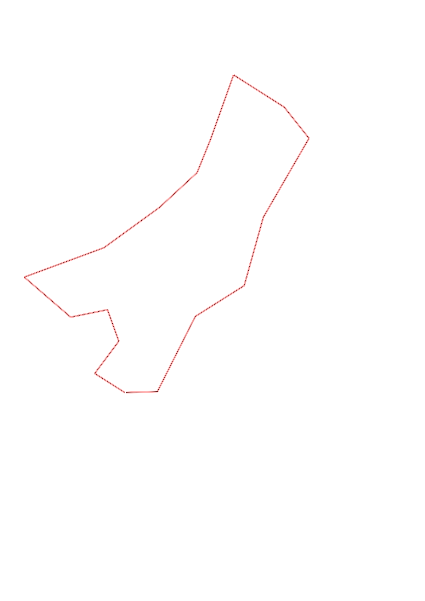
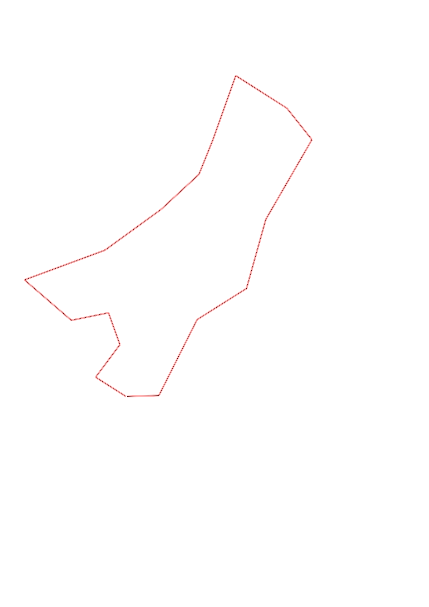

| Control |
Points |
Time Punched |
Distance |
Your Time |
Pace |
Place |
Fastest Time |
Median Time |
% Behind Fastest |
| 35 |
30 |
|
0.27 |
0:01:07 |
04:08 |
1 / 17 |
0:01:07 |
0:01:37 |
0% |
| 51 |
50 |
|
0.3 |
0:02:10 |
07:13 |
3 / 12 |
0:02:01 |
0:03:06 |
7% |
| 58 |
50 |
|
0.25 |
0:01:35 |
06:20 |
2 / 9 |
0:01:32 |
0:02:16 |
3% |
| 72 |
70 |
|
0.28 |
0:02:29 |
08:52 |
5 / 9 |
0:01:47 |
0:02:29 |
39% |
| 92 |
90 |
|
0.46 |
0:04:02 |
08:46 |
6 / 11 |
0:03:10 |
0:04:02 |
27% |
| 53 |
50 |
|
0.63 |
0:07:31 |
11:55 |
6 / 8 |
0:05:32 |
0:06:36 |
35% |
| 65 |
60 |
|
0.51 |
0:03:19 |
06:30 |
2 / 5 |
0:02:49 |
0:03:42 |
17% |
| 39 |
30 |
|
0.38 |
0:02:48 |
07:22 |
5 / 7 |
0:02:28 |
0:02:44 |
13% |
| 77 |
70 |
|
0.27 |
0:01:58 |
07:17 |
6 / 9 |
0:01:14 |
0:01:56 |
59% |
| 100 |
100 |
|
0.51 |
0:03:32 |
06:55 |
2 / 6 |
0:02:50 |
0:03:40 |
24% |
| 47 |
40 |
|
0.45 |
0:03:21 |
07:26 |
3 / 4 |
0:03:04 |
0:03:14 |
9% |
| 67 |
60 |
|
0.3 |
0:02:10 |
07:13 |
3 / 5 |
0:01:53 |
0:02:10 |
15% |
| 61 |
60 |
|
0.68 |
0:04:49 |
07:04 |
1 / 3 |
0:04:49 |
0:04:54 |
0% |
| 59 |
50 |
|
0.53 |
0:04:56 |
09:18 |
6 / 7 |
0:03:28 |
0:04:06 |
42% |
| 91 |
90 |
|
0.43 |
0:04:33 |
10:34 |
3 / 4 |
0:02:43 |
0:04:06 |
67% |
| 63 |
60 |
|
0.62 |
0:09:09 |
14:45 |
1 / 1 |
0:09:09 |
0:09:09 |
0% |
| Finish |
0 |
|
0.23 |
0:01:09 |
05:00 |
3 / 11 |
0:00:57 |
0:01:23 |
21% |
Total Distance Covered: 7.1km
Points Scored: 960
Late Penalty: -20
Final Score: 940
Total Time: 1hours 0minutes 38seconds
Efficiency: 132.39 points/km
 
